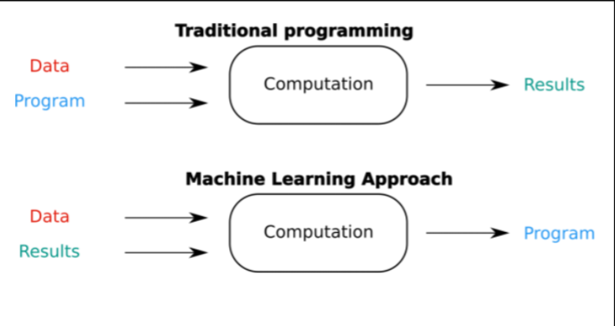
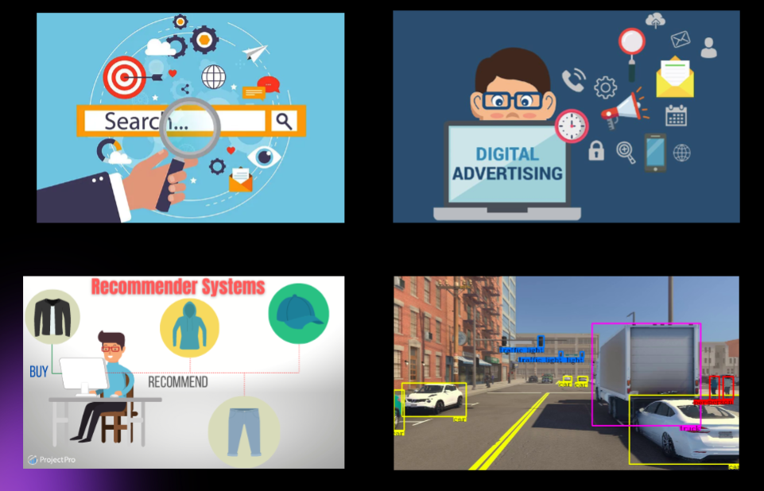
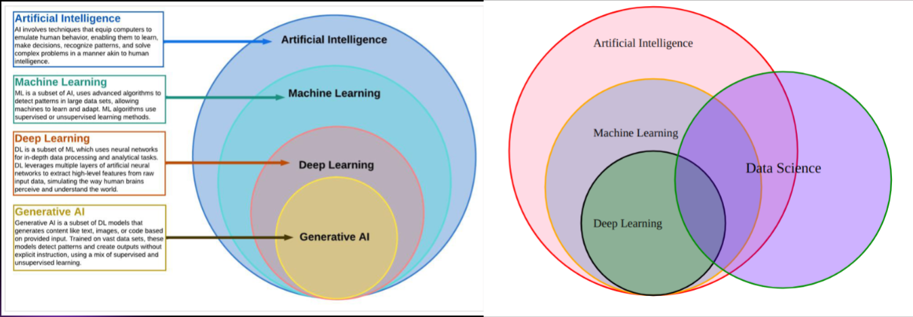
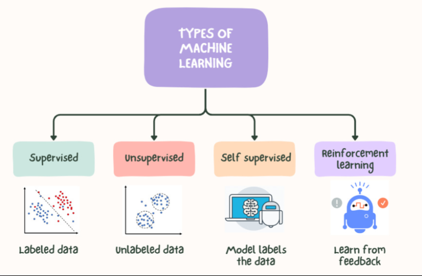
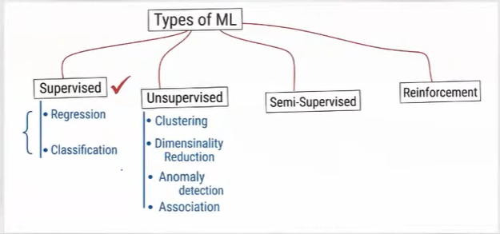
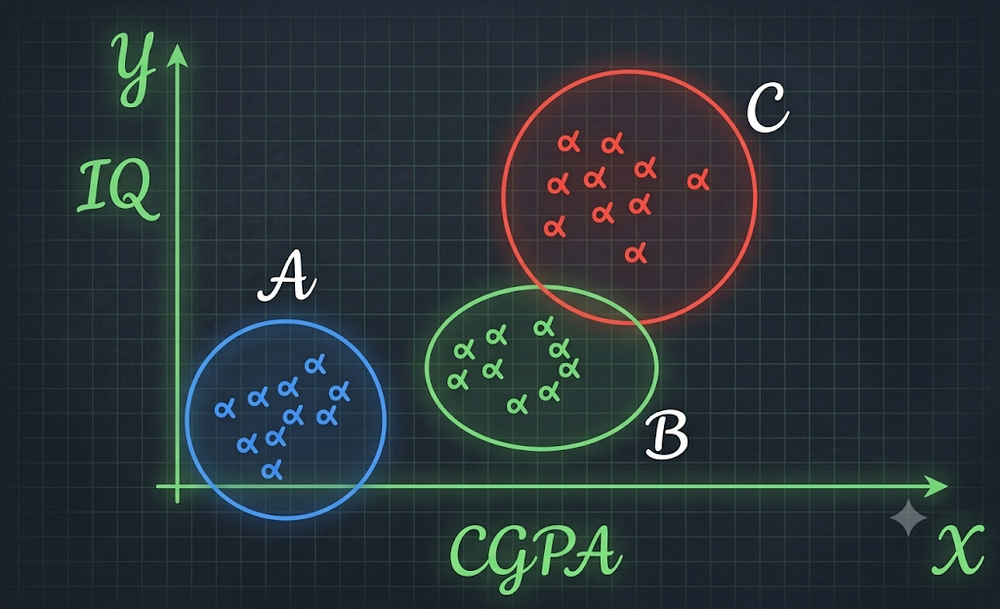
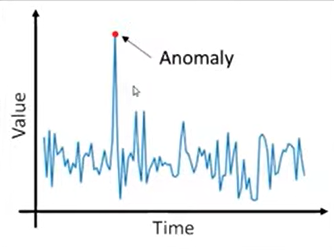
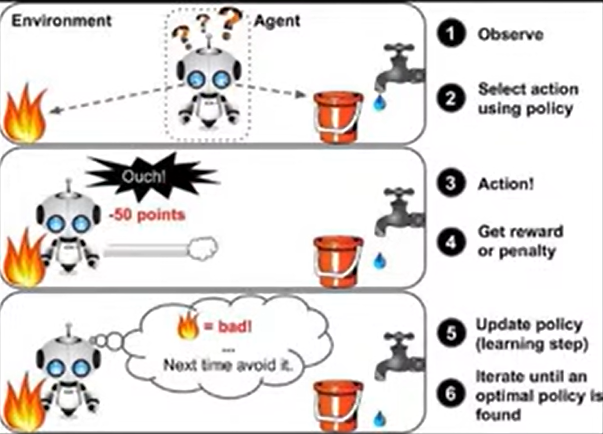
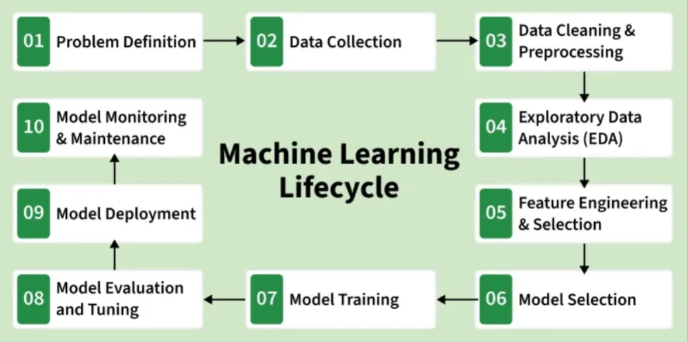

Introduction to Machine Learning
What is Machine Learning?
Machine learning is a field of computer science that uses statistical techniques to give computer systems the ability to “learn” with data, without being explicitly programmed.

In traditional programming, we provide the computer with both the data and the rules (algorithm) to process that data. In contrast, in machine learning, we provide the computer with data and the desired output, and it learns the rules (model) to achieve that output.
Example: Email Spam Detection
In the early period, email spam detection was based on manually crafted rules, such as filtering emails containing certain keywords. People followed traditional programming to create these rules with code (like if-else statements). However, as spammers evolved their tactics, it became difficult to keep up with the changing patterns.
With machine learning, we can train a model on a large dataset of emails labeled as “spam” or “not spam.” The model learns to identify patterns and features that distinguish spam from legitimate emails, allowing it to adapt to new types of spam without needing explicit rule updates.
Applications of Machine Learning
Machine learning has a wide range of applications across various industries. Some common applications include:
- Search Engines: Improving search results based on user behavior and preferences.
- Recommendation Systems: Suggesting products, movies, or content based on user interactions.
- Digital Advertising: Targeting ads to specific audiences based on their online behavior.
- Computer Vision: Enabling machines to interpret and understand visual information from the world.


Types of Machine Learning


Supervised Learning
In supervised learning, the model is trained on a labeled dataset, which means that each training example is paired with an output label. The goal is for the model to learn a mapping from inputs to outputs so that it can predict the label for new, unseen data.
Suppose we have a dataset like this:
| IQ | CGPA | Placement |
|---|---|---|
| 95 | 8.9 | Y |
| 55 | 5.5 | N |
| 96 | 7.7 | Y |
If we want to train a supervised learning model to predict whether a student will be placed (Y/N) based on their IQ and CGPA, we would use the IQ and CGPA as input features and the Placement as the output label. Then the model would learn from this data to make predictions on new students based on their IQ and CGPA. After training, we could input a new student’s IQ and CGPA, and the model would predict whether they are likely to be placed or not.
There are two main types of supervised learning:
1. Regression
Regression is used when the output variable is continuous. The model learns to predict a numerical value based on the input features. For example, predicting house prices based on features like size, location, and number of bedrooms.
| size | location | bedrooms | price |
|---|---|---|---|
| 2000 | suburb | 3 | 300000 |
| 1500 | city | 2 | 250000 |
Look here, the price is a continuous variable. So, we would use regression to predict the price of a house.
There are so many regression algorithms, such as:
- Simple Linear Regression
- Multiple Linear Regression
- Polynomial Regression
- Ridge Regression
- Lasso Regression
- Elastic Net Regression
- Support Vector Regression
- Decision Tree Regression
We will learn them going forward.
2. Classification
Classification is used when the output variable is categorical. The model learns to predict a class label based on the input features. For example, there is a placement dataset where we want to predict whether a student will be placed (Y/N) based on their IQ and CGPA. In this case, the output variable is categorical (Y or N), so we would use classification algorithms to make predictions.
| IQ | CGPA | Placement |
|---|---|---|
| 95 | 8.9 | Y |
| 55 | 5.5 | N |
| 96 | 7.7 | Y |
Here, the Placement is a categorical variable. So, we would use classification to predict whether a student will be placed or not based on their IQ and CGPA.
Common classification algorithms include:
- Logistic Regression
- Decision Trees
- Random Forest
- Support Vector Machines (SVM)
- K-Nearest Neighbors (KNN)
- Naive Bayes
Unsupervised Learning
In unsupervised learning, the model is trained on an unlabeled dataset, which means that the training data does not have output labels. The goal is for the model to learn the underlying structure or patterns in the data without any guidance on what the output should be.
Suppose we have a dataset of customer data with features like age, income, and spending habits, but we do not have any labels indicating customer segments. In this case, we can use unsupervised learning to identify natural groupings or clusters of customers based on their similarities in the feature space.
Clustering
Clustering is a common unsupervised learning technique that groups similar data points together based on their features. The goal is to partition the data into clusters where data points within the same cluster are more similar to each other than to those in other clusters.

Suppose, we have a dataset of CGPA and IQ of students, and we want to group them into clusters based on their similarities. We can easily separate them into clusters and create labels for each cluster.
| IQ | CGPA | Cluster |
|---|---|---|
| 95 | 8.9 | B |
| 55 | 5.5 | B |
| 96 | 7.7 | C |
Now we can use this clustered data for further analysis or to train a supervised learning model if we want to predict the cluster labels for new students based on their IQ and CGPA. One more mentionable example of clustering is customer segmentation, where businesses group customers based on their purchasing behavior, demographics, or other features to tailor marketing strategies and improve customer engagement.
Common clustering algorithms include:
- K-Means Clustering
- K-Medoids Clustering
- DBSCAN (Density-Based Spatial Clustering of Applications with Noise)
- Hierarchical Clustering
Dimensionality Reduction
Dimensionality reduction is another unsupervised learning technique that reduces the number of features in a dataset while retaining as much information as possible. This is particularly useful when dealing with high-dimensional data, which can be computationally expensive and may lead to overfitting. Here dimension means the number of features in the dataset.
There is a concept called the “curse of dimensionality,” which refers to the challenges that arise when working with high-dimensional data. As the number of features increases, the volume of the feature space grows exponentially, making it difficult for models to learn effectively. Dimensionality reduction techniques help mitigate this issue by transforming the data into a lower-dimensional space while preserving important information.
Principal Component Analysis (PCA): This is a popular dimensionality reduction technique. Suppose we have a dataset with two features, number of rooms and number of bathrooms, for a set of houses. If we apply PCA to this dataset, we can transform these two features into a single principal component house size, which contains the same information as the original features but in a reduced dimensionality. There is a popular dataset called the MNIST dataset, which contains 28x28 = 784 features (pixels) for each image of handwritten digits. By applying PCA, we can reduce the dimension to 2 or 3 while retaining most of the variance in the data, making it easier to visualize and analyze.
Anomaly Detection
Anomaly detection is an unsupervised learning technique used to identify rare or unusual data points that deviate significantly from the majority of the data. These anomalies can indicate potential issues, such as fraud, network intrusions, or equipment failures.

Association Rule-Based Learning
Association rule-based learning is an unsupervised learning technique that discovers interesting relationships or associations between variables in large datasets. It is commonly used in market basket analysis to identify products that are frequently purchased together.
We can see the application of association rule-based learning in supershops. In supershops, if there is a sports section, there will be a drinks(like energy drinks, protein shakes) section beside the sports section. This is because customers who buy sports equipment are likely to buy drinks as well. By analyzing the purchase patterns of customers, the store can identify these associations and optimize the layout of the store to increase sales.
Semi-Supervised Learning
Semi-supervised learning is a machine learning paradigm that combines both labeled and unlabeled data during the training process. This approach is particularly useful when obtaining labeled data is expensive or time-consuming, while unlabeled data is abundant. Most of the cases, we use semi-supervised learning in GenAI. For example, we want to train a image recognition model. We have a large dataset of images. It is expensive and time-consuming to label all the images. So, we can manually label a small portion (20% - 30%) of the dataset and label the remaining unlabeled data using models trained on the labeled data or we can use unsupervised learning techniques like clustering to group similar data points together and assign labels based on the clusters. This way, we can leverage the large amount of unlabeled data to improve the performance of our model while minimizing the need for extensive manual labeling.
Reinforcement Learning
Reinforcement learning is a type of machine learning where an agent learns to make decisions by interacting with an environment. The agent receives feedback in the form of rewards or penalties based on its actions, and it aims to maximize the cumulative reward over time. Robotics, tesla self-driving cars, and game playing (like chess or Go) are some of the popular applications of reinforcement learning.
Here is an image that shows the concept of reinforcement learning.

ML Project Development Lifecycle
